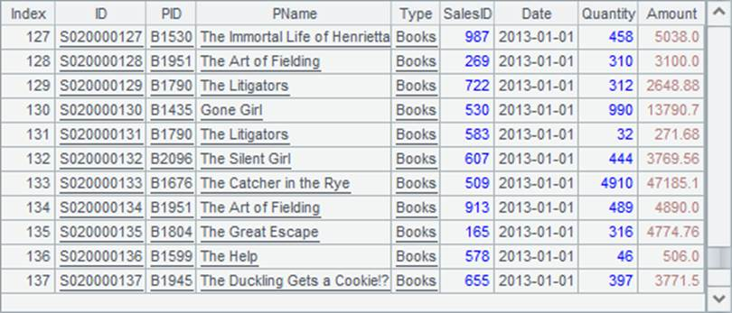
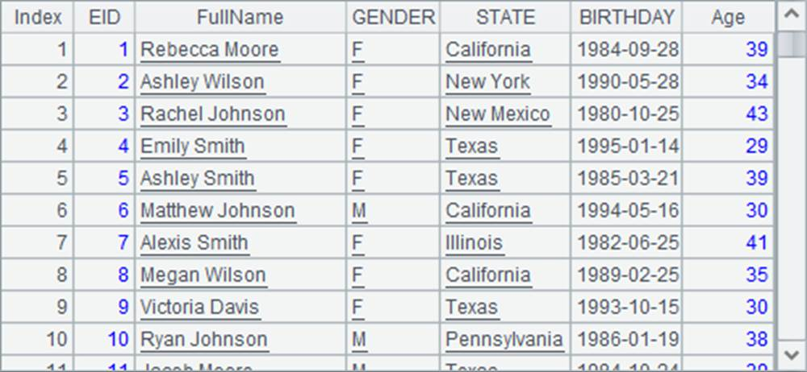

When a file holds a large amount of data, to load it all together to the memory may cause an overflow. In this case, it should be imported in batches. To do so, use a file segmentation parameter in the import function to import data by segment. For example:
|
|
A |
|
1 |
=file("PersonnelInfo.txt") |
|
2 |
=A1.import@t(;100:500) |
|
3 |
=A1.import@t(;101:500) |
The text file PersonnelInfo.txt holds the personnel information. Both A2 and A3 use a file segmentation parameter in a form like 100:500 in the import function. So A2 divides data into 500 segments and imports the 100th segment. Here¡¯s its result:

A3 continues to import the 101th segment:

During the batch import, esProc is able to ensure that complete records are imported by adjusting positions for beginning and ending points, and meanwhile maintains the continuity, integrity and uniqueness of the imported data.
Note: With the import function, when a file is imported in batches by being divided into multiple segments, the number of records imported varies with each batch because records have different numbers of bytes. That also explains why a specified row of data cannot be got directly. To locate the record in a specified positon, records need to be traversed one by one until the record is found. This is not efficient at all. Yet, the external file cursor can be used to access the target record precisely, which will be explained in the next section.
By segmenting a large file, a computing task can be divided into multiple subtasks. The method is significant to cluster computing. In The Server Cluster, we¡¯ll discuss the batch processing of a large file using cluster computing.
The export of a big data table to a text file can also be hindered by the limited memory. Because data cannot be entirely loaded into the memory, it cannot be exported to a file at a time. But similarly, the export of a large file can be handled through batch processing. Use @a option in export function to append data to the existing data at each batch of data export. For example:
|
|
A |
B |
|
1 |
=file("PersonnelInfo.txt") |
=file("PersonnelInfo1.txt") |
|
2 |
for 500 |
=A1 .import@t(ID,Name,State;A2:500) |
|
3 |
|
>B1.export@at(B2) |
A2 runs a loop to import data from PersonnelInfo.txt in 500 batches and specifies certain fields to be written to the new file PersonnelInfo1.txt. @at options are used with the export function to export column names and detailed data by appending each batch to the existing data. When the code is executed, PersonnelInfo1.txt gets the following data£º
But without @a option, the existing data in the file will be removed at each export.